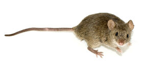

ⲡⲉⲛ S v ⲡⲓⲛ.
(noun
male)
species
mouse [μυς]

complete
263a
ⲡⲓⲛ SA, ⲫⲓⲛ B nn m, mouse: Lev 11 29 SB, Is 66 17 SB μῦς; P 44 56 S ⲡⲡ. · ποντικός · فار; C 89 214 B ⲛⲓⲫ. eat lamp wick, Miss 4 700 S cast forth ⲛⲉⲓⲡ. ⲉϣⲁⲩϣⲱⲡⲉ ϩⲙⲡϩⲏⲧ, BMis 519 S neither ⲡ. nor ⲡⲏⲣϣ in his fields, DeV 2 227 B ⲕⲁⲗⲏ & ⲫ. are enemies. ⲛⲟϭ ⲙⲡ. S rat (?): Glos 261 σατυρίσκος (sic l) · ⲡϩⲁ ⲛ̣ⲟ̣ϭ ⲛⲡ.; ⲉⲟⲩⲉⲛ ⲙⲡ. A, ⲁⲟⲩⲁⲛ ⲙⲫ. B, mouse-coloured: Zech 1 8 ψαρός; ⲙⲁⲁϫⲉ ⲙⲡⲡ. S, myosotis: P 44 83 ودن الفار, BKU 1 9 sim. ⲙⲟⲟⲩ ⲛⲡⲉⲛ ⲉⲧⲡⲱϣ, water of split (& cooked) mouse (so Chassinat citing Dioscorides) PMéd 297 S, cf ib 275 ⲙⲟⲩⲛⲉⲧⲡⲱϣ. V also ⲕⲉⲗⲕⲉⲃ. As name: Ππῖν (Preisigke).
See also:
| view | ⲁⲗⲓⲗ SB ⲁⲗⲓⲗⲓ B | (noun male) field mouse [μυγαλη]630 |
| view | ⲉⲙⲓⲙ O | (noun male) shrew mouse2748 |